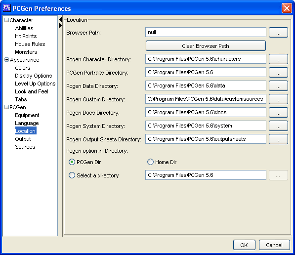

PCGen Location Options

The
Location
menu option allows you to select
the locations of:
-
The
Browser Path
plus the option to clear it
again. This is used to preview output sheets.
-
The
Character Directory
. This is where the
created PC files are stored.
-
The
Portraits Directory
. This is where the
.jpg or .gif files that correspond to the created PC files sit.
They display in the Description tab and some output sheets.
-
The
Data Directory
. This is where the list
files for all available sources are located.
-
The
Custom Directory
. This is where the list
files for custom source files generated by the list editors are
located.
-
The
Vendor Data Directory
. This is where the
list files for additional source files produced by third parties of
the users are located.
-
The
Docs Directory
. This is where these
fantastic documents are located.
-
The
System Directory
. This is where the game
system files are located.
-
The
Output Sheet Directory
. This is where the
Output Sheets are located.
-
The
Preview Sheet Directory
. This is where the
Preview Sheets are located.
-
Create Character Backup Files
. When checked
PCGen will create a second backup pcg file when saving
characters.
-
The
Character Backup Files
. This is where the
Character Backup Files files are located. If left blank Character
Backup Files are saved in the same location as the primary
character file.
-
The
option.ini Directory
. This is where your
selected preferences and filter settings are stored. You can select
the PCGen Directory (will be overwritten by updates!), your Home
Directory (so individual users of a shared PC can have a different
set of preferences) or a selected directory.